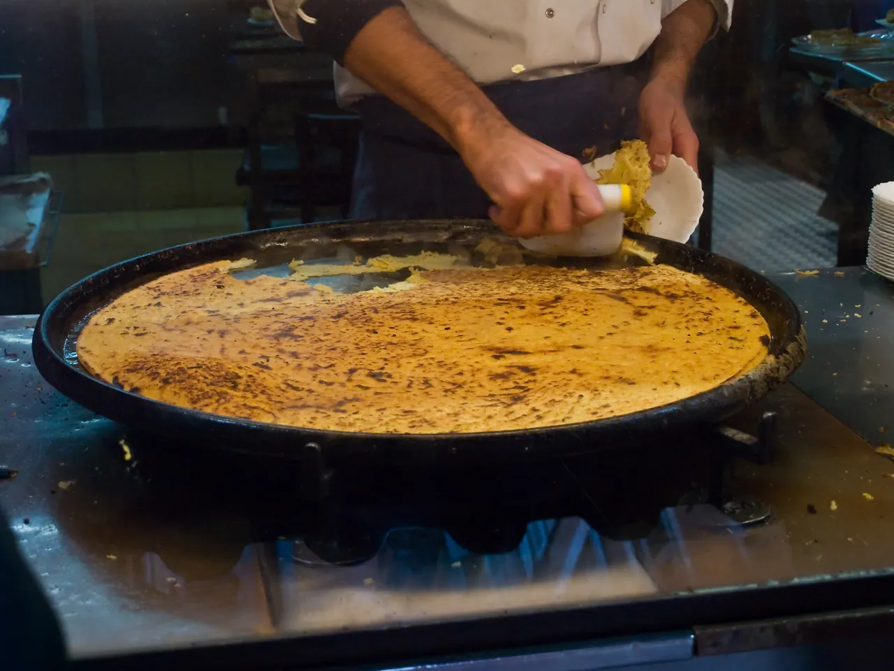
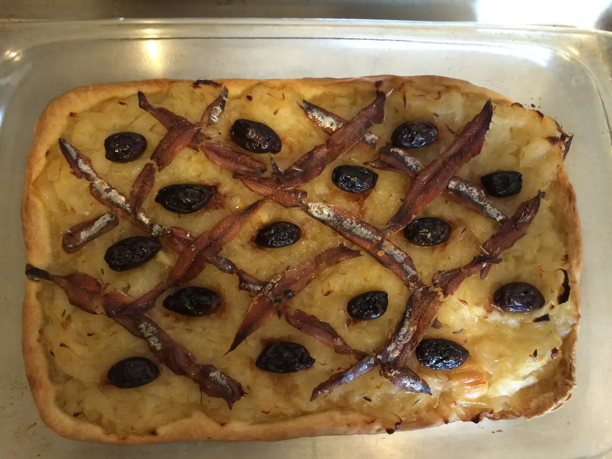

{kind=link}

Colline du Château (성채 언덕)
해발 92m 바위 절벽 위에서 천사의 만(Baie des Anges)과 구시가지, 림피아 항구를 360도 파노라마로 굽어보는 니스 최고의 천연 전망 공원.

니스는 이번 여행에서 처음으로 며칠 동안 짐을 풀어놓고 생활 리듬을 회복하는 해안 거점이다. 구시가지와 시장, 해변을 천천히 걷고, 기차로 Antibes·Cannes와 Monaco·Menton을 다녀오면서 서로 다른 성격의 리비에라 도시를 비교한다.
도시 자체를 보는 날과 해안 도시를 당일치기로 다녀오는 날을 섞고, 매일 저녁에는 니스로 돌아와 장을 보거나 쉬면서 일정의 강도를 낮춘다. Nice에서는 Cours Saleya의 시장과 Vieux Nice, Colline du Château와 해변 산책을 중심으로 보고, Cannes는 오래된 Le Suquet과 항구에서 Croisette로 이어지는 대비를, Monaco와 Menton은 한날에 서로 다른 분위기의 동부 해안을 경험하는 일정으로 본다. 마지막 날 전에는 Villefranche-sur-Mer와 Cap-Ferrat, 절벽마을 Èze로 이어지는 가까운 해안을 하루에 묶는다.
하루를 모두 채우기보다 한두 개의 핵심 경험을 남기고, 늦은 오후나 저녁에는 니스로 돌아와 쉬는 것을 기본으로 한다.
| 날짜 | 핵심 일정 |
|---|---|
| 9/4 금 | Nice 도착 · 체크인 · 숙소 주변 |
| 9/5 토 | Nice 시장 · 구시가지 · 성채 언덕 · 해변 |
| 9/6 일 | Antibes · Cannes 당일치기 |
| 9/7 월 | Monaco · Menton 당일치기 |
| 9/8 화 | Villefranche-sur-Mer · Villa Ephrussi · Èze 당일치기 |
| 9/9 수 | Nice-Ville역 렌터카 인수 · Saint-Paul-de-Vence · Grasse · Aix 이동 |
상세 시각, 이동, 식사와 대체 일정은 각 날짜의 Day 페이지에서 확인한다.
해발 92m 바위 절벽 위에서 천사의 만(Baie des Anges)과 구시가지, 림피아 항구를 360도 파노라마로 굽어보는 니스 최고의 천연 전망 공원.

지중해 꽃과 프로방스 제철 식재료, 그리고 갓 구워낸 니스 전통 소카(Socca)를 맛보는 유서 깊은 야외 시장 광장.

지중해로 60m 솟아오른 천연 바위 절벽 위에 조성된 모나코 대공국의 역사적 심장부이자 왕궁 마을.

크루아제트의 화려함 뒤에 숨겨진 11세기 옛 어촌의 가파른 돌계단 골목과 정상 성당에서 바라보는 칸 만의 파노라마.

칸 주민들의 부엌이자 지중해 해산물, 프로방스 과일, 꽃, 치즈가 가득한 1934년 유서 깊은 철골 재래시장.

프랑스·이탈리아 국경의 온난한 미기후 속에 지중해로 쏟아져 내리는 파스텔톤 구시가지와 17세기 바로크 생 미셸 대성당을 품은 '프랑스의 진주'.

쿠르 살레야 시장에서 출발해 비외 니스 미로 골목을 지나 성채 언덕의 지중해 낙조 파노라마로 이어지는 니스의 시그니처 도보 코스.

칸 기차역에서 출발해 포르빌 시장, 11세기 르 쉬케 어촌 언덕, 구항구를 지나 영화제의 상징 크루아제트 대로로 이어지는 칸 핵심 도보 코스.

절벽 위 왕궁 마을(Le Rocher)에서 11:55 위병 교대식을 보고 랑프 마요르 돌계단을 내려와 에르퀼 항구 F1 서킷을 지나 몬테카를로 카지노 광장으로 이어지는 모나코 핵심 도보 코스.

지중해 천사의 만(Baie des Anges)을 따라 7km로 이어지는 전 세계에서 가장 상징적인 해안 산책로이자 벨 에포크 건축의 전시장.

사보이 공국의 500년 통치 흔적이 남은 이탈리아 바로크풍 파스텔톤 건물과 미로 골목으로 이루어진 니스의 역사적 심장부.

국제영화제의 상징 크루아제트 대로와 호화 요트 항구, 그리고 11세기 중세 어촌의 원형 르 쉬케 언덕이 공존하는 코트다쥐르의 영화 도시.

관광객 중심의 쿠르 살레야와 달리 니스 현지 주민들의 진짜 장바구니 물가와 일상을 만나는 대형 야외 농산물 시장.

해발 60m 절벽 위 왕궁 마을(Le Rocher), F1 그랑프리 서킷의 에르퀼 항구, 벨 에포크의 정점 몬테카를로 카지노가 수직으로 공존하는 세계 2위의 극소국.

지중해 절벽 위 분홍빛 벨 에포크 팔라초와 세계 9대 테마 정원, 분수 음악 쇼를 품은 리비에라의 보석.

앙티브 옛 성벽 골목에 위치한 미쉐린 1스타 레스토랑. 셰프 크리스티앙 모리세의 섬세한 남프랑스 지중해 미식.

에프뤼시 드 로스차일드 저택 내부의 우아한 살롱과 지중해 전망 테라스에서 즐기는 로맨틱 런치.


니스 음식은 프로방스와 가까우면서도 이탈리아 리구리아의 영향을 강하게 받은 별도의 지역 전통을 갖고 있다. 올리브유, 채소, 병아리콩, 앤초비를 많이 쓰며 시장과 간단한 길거리 음식에서 그 특징이 잘 드러난다.
Cours Saleya는 꽃과 식재료가 함께 서는 구시가지의 시장이고, 니스에 머무는 날 아침의 장보기 기준점이다. 갓 구운 소카를 그 자리에서 먹을 수 있다. Marché de la Libération은 관광 동선에서 벗어난 대형 생활시장이라 현지 물가와 일상이 그대로 보인다. 앙티브 당일치기에서는 성벽 안 아케이드의 Marché Provençal이 오전 산책과 이어진다.
세 곳 모두 오전이 본체다 — 정오를 넘기면 좌판이 접히기 시작한다. 운영시간과 휴장은 각 시장의 장소 페이지에, 방문 시각은 그날의 Day 페이지에 있다.
이 구간에서 예약이 걸린 곳은 앙티브의 Le Figuier de Saint-Esprit(일요일 점심)와 Cap-Ferrat의 Restaurant & Salon de Thé Béatrice(빌라 입장객 전용 점심) 두 곳이다. 메뉴·가격·예약 조건은 각 식당의 장소 페이지에 있고, 어느 날 어느 끼니인지는 Day 페이지가 정본이다.
그 밖의 끼니는 시장에서 조달하거나 그날 동선의 끝에서 먹는 것을 기본으로 한다. 모나코의 Marché de la Condamine이나 망통 구항구처럼 그날 안에서 정해지는 선택지는 해당 Day 페이지에 적혀 있다.
확정 숙소는 Masséna 광장 북서쪽 Verdi 가의 Palais ALZIRA(12 Rue Verdi)다. Nice-Ville 역과 Promenade des Anglais 가 모두 도보권이라 5박 내내 차 없이 움직인다. 주방과 세탁기를 갖춘 50㎡ 로프트다. 체크인 18:00–19:00 · 체크아웃 11:00.
확정 숙소는 Nice 중심부의 Palais ALZIRA다. Nice-Ville 역과 Promenade des Anglais 사이에 있어 철도 당일치기와 해변 산책을 모두 연결하기 쉽고, 주방과 세탁기가 있어 5박 동안 생활 거점으로 쓰기 좋다.
숙소에서 남쪽으로는 Masséna와 해변, 동쪽으로는 Vieux Nice, 북쪽으로는 Nice-Ville 역이 이어진다. 당일치기에서 늦게 돌아오는 날에는 역에서 바로 숙소로 돌아오고, Nice에 머무는 날은 시장과 구시가지, 해변을 도보로 연결한다.
5박 중 나흘이 아침 일찍 Nice-Ville 역에서 출발한다. 관광 일정을 더 늘리기보다 저녁 시간을 세탁과 장보기, 해변 산책에 함께 쓰는 편이 이 구간의 성격에 맞는다.
운동은 숙소에서 해변 방향으로 걷거나 가볍게 뛰는 정도를 기본으로 하고, 수영은 실제 일정에 여유가 있을 때만 선택한다.
늦은 귀가 — 당일치기는 TER 로 돌아온다. Day 10 은 망통에서 20:30 복귀라 낮에 막차 시각을 미리 확인한다. Nice-Ville 에서 숙소까지는 도보권이다.
Day 7 NCE 16:55 도착. 수하물 수령 뒤 트램 2호선으로 숙소 생활권까지 이동해 18:00–19:00 사이에 체크인한다. 공항 T2 에서 익명 La Carte 에 Multi voyages 를 충전한다 — Aéro 왕복권과 1일권은 이번 이용 횟수에 맞지 않는다.
9.4(금) · Day 7 · NiceDay 12 08:00 체크아웃. Nice-Ville 역 Hertz 영업소(Avenue Thiers)에서 09:00 자동변속 컴팩트를 인수해 Saint-Paul-de-Vence·Grasse 를 거쳐 Aix 로 간다. 이 인수가 이후 구간 전체의 시작점이다.
9.9(수) · Day 12 · Aix-en-Provence두 사람이 Day 7·11에 함께 쓰고 2회 여유를 두는 기본안
Multi voyages를 담는 공동 매체; 반납처에서 보증금 환급 가능
이번 일정은 공항에서 편도만 이동하므로 구매하지 않음
니스 공항에서는 Tram 2로 도심에 들어온다. 숙소는 Masséna와 Nice-Ville 사이에 있어 트램에서 내려 걸어서 연결할 수 있다. 실제 도착시각과 체크인 순서는 도착일 Day 페이지를 따른다.
당일치기는 모두 Nice-Ville 역에서 TER로 연결한다. 자동차보다 주차 부담이 적고 각 도시 중심으로 바로 들어갈 수 있어 이번 일정에는 철도가 기본이다. 해안 마을과 절벽 위 Èze처럼 역에서 떨어진 곳만 시내버스를 덧붙인다. 실제 열차와 출발시각은 각 Day 페이지에서 확인한다.
마지막 날 아침 Nice-Ville 역의 Hertz 영업소에서 차를 받아 프로방스로 넘어간다. 이 인수가 이후 구간 전체의 시작점이라, 인수 시각과 서류는 전날 저녁에 미리 확인해 둔다. 인수 시각과 경유지는 그날의 Day 페이지, 예약 내용은 준비 페이지가 정본이다.
내륙 마을에서는 노상 주차 대신 구시가지 진입 차단선 밖의 유료 공영주차장을 쓰고, 장기 여행 짐이 밖에서 보이지 않게 가림막을 쳐 둔다.
Nice 시내 tram·주요 bus와 공항·해안축 연결을 확인한다. 여행 월과 같은 2026년 9월판이며, 운행 장애와 정류장 변경은 당일 공식 앱에서 다시 확인한다.
{kind=link}
{kind=link}